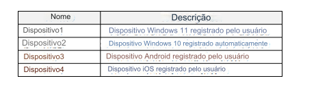
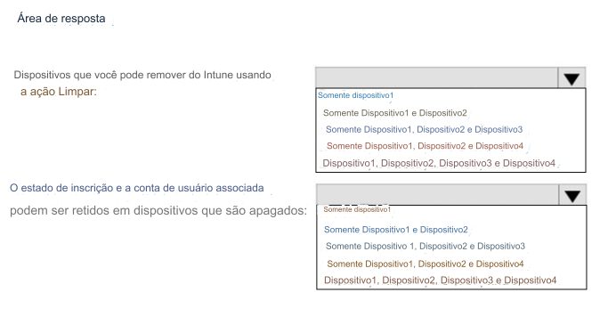

243- PONTO DE ACESSO
Você tem dispositivos registrados no Microsoft Intune conforme mostrado na tabela a seguir.

Você precisa identificar o seguinte:
• Dispositivo que você pode remover do Intune usando a ação Limpar.
• O estado de registro e a conta de usuário associada podem ser mantidos em dispositivos que são apagados.
O que você deve identificar? Para responder, selecione as opções apropriadas na área de resposta.
